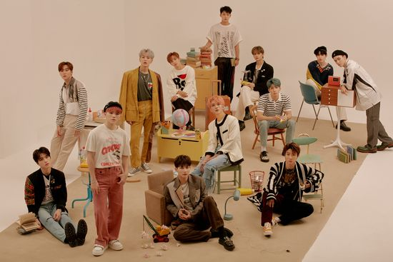

A lo largo de su carrera, Seventeen ha lanzado una gran cantidad de álbumes que han tenido un impacto significativo en la industria musical. Entre sus trabajos más destacados se encuentran:
Estos álbumes reflejan la evolución del grupo tanto en lo musical como en lo conceptual. En cuanto a sus canciones más populares, se destacan títulos como:
Ahora, si quieres vovler al inicio o consultar otra páginas puedes utilizar este menú: